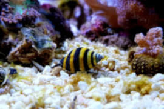
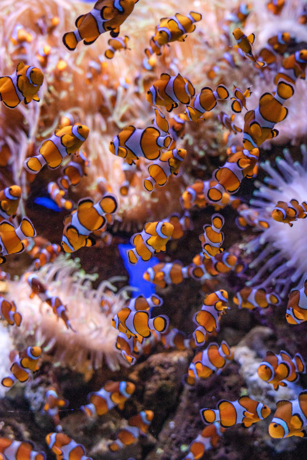
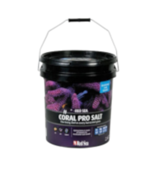

Invertebrados
Caramujo Bumblebee
Eles possuem um padrão de faixas amarelas e pretas e permanecem bastante pequenos, crescendo até 1,5 centímetros de comprimento. Esses pequenos animais se alimentam de detritos e matéria orgânica em decomposição, assim como também de vermes e outras pragas que vivem no substrato.

Peixes Pequenos
Peixe-palhaço
O peixe-palhaço é um dos peixes marinhos pequenos, portanto, pode se desenvolver em aquários menores, de até 100 ml, com temperatura entre 21ºC e 28ºC.

Cuidados
Red Sea Sal Coral Pro
Balde 7kg, Coral Pro contém níveis elevados e equilibrados dos elementos básicos (cálcio, magnésio, bicarbonatos) necessários para o crescimento sustentável e acelerado do coral
